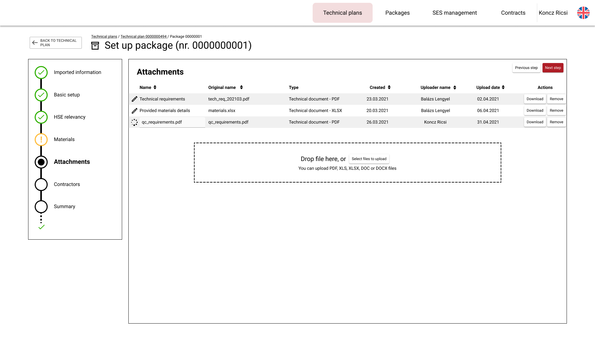
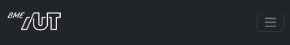
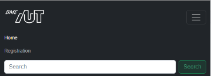
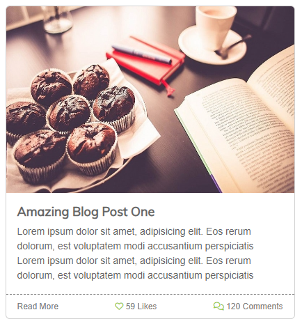

Moodle-ben keresd meg a laborhoz tartozó meghívó URL-jét és annak segítségével hozd létre a saját repository-dat.
Várd meg, míg elkészül a repository, majd checkout-old ki.
Egyetemi laborokban, ha a checkout során nem kér a rendszer felhasználónevet és jelszót, és nem sikerül a checkout, akkor valószínűleg a gépen korábban megjegyzett felhasználónévvel próbálkozott a rendszer. Először töröld ki a mentett belépési adatokat (lásd itt), és próbáld újra.
Hozz létre egy új ágat megoldas néven, és ezen az ágon dolgozz.
A neptun.txt fájlba írd bele a Neptun kódodat. A fájlban semmi más ne szerepeljen, csak egyetlen sorban a Neptun kód 6 karaktere.
A webfejlesztésben általános jelenség, hogy a dizájnerek "csak" UI / UX terveket állítanak össze HTML és CSS kódot nem írnak, így a fejlesztők kapják azt a feladatot, hogy a megtervezett kinézetűre varázsolják az alkalmazást.
A UI/UX tervek különböző szoftverekkel készülnek attól függően, hogy mi a célja. Azonban egy dolog mindegyikben közös. Gyorsan lehet prototipizálni vele, ami könnyen demózható a megrendelőnek.
A drótváz (wireframe), ahol a hangsúly az elrendezésen és az adatokon van, nem a színeken ott gyakran Figma-ban készül a kinézet.

Elkészített oldalváz figma segítségével
Ha a hangsúly inkább a színvilágon és a designon van, akkor pedig a Zeplin egy gyakori választás.
Zeplin
A fejlesztés céljából mindegy is, hogy melyik alkalmazásban készül el az oldal designja, a rajzokból CSS és HTML kódot a fejlesztőnek kell készítenie.
A mai labor alkalmával az alábbi képből (és egy kicsi HTML váz segítségével) kell az oldalt elkészíteni.
Nyissuk meg a VS Code-dal leklónozott repository feladat mappáját (File -> Open Folder)!
Az alkalmazás futtatásához használjuk a VS Code Live Servert a megszokott módon (Go Live lehetőség a jobb alsó sarokban az index.html megnyitása után, vagy F1 > "Live Server: Open with Live Server")!
Ellenőrizzük, hogy megfelelően betöltődik-e az alkalmazás!
A dizájnolás folyamán általában valamilyen keretrendszerből indulunk ki, mely kész megoldásokat ad a leggyakoribb feladatokra, így csökkentve az egyedi CSS mennyiségét. A Bootstrap két alapvető funkciót nyújt:
Layout rendszer
Reszponzív megjelenés.
Bootstrap Gridre épül, ami flexbox alapú
5.1-től lehetőséged az, hogy a SASS forráskóban lecseréljük a BootStrap Grid-et CSS Grid-re, ez még egyelőre exparimental státuszban van. (Részletek itt találhatók.)
Egységes színek és formázás az alapvető elemekre.
Gyakori komponensek (felugró ablakok, kártyák, nyitható-zárható blokkok, kiemelések, panelek) CSS és JS segítségével.
A laboron ezekből a kész komponensekből fogunk megismerni egy párat közelebbről is.
Nyissuk meg az index.html fájlt, amit a labor során meg fogunk formázni.
Nézzük meg, hogy az oldal head-jében milyen állományokat és honnan töltünk be.
<head><metacharset="utf-8"><metaname="viewport"content="width=device-width, initial-scale=1"><title>MyBlog</title><!-- Bootstrap linkelése CDN-ről --><linkhref="https://cdn.jsdelivr.net/npm/bootstrap@5.2.2/dist/css/bootstrap.min.css"rel="stylesheet"integrity="sha384-Zenh87qX5JnK2Jl0vWa8Ck2rdkQ2Bzep5IDxbcnCeuOxjzrPF/et3URy9Bv1WTRi"crossorigin="anonymous"><!-- Font awesome 6 CDN-ről (solid, regular és brand is) --><linkrel="stylesheet"href="https://use.fontawesome.com/releases/v6.2.0/css/all.css"crossorigin="anonymous"><!-- Google font (Muli) letöltése --><linkhref="https://fonts.googleapis.com/css?family=Muli"rel="stylesheet"><!-- Saját CSS --><linkrel="stylesheet"href="assets/css/site.css"></head>
Figyeljük meg, hogy négy különböző CSS állományt töltünk be, egy kivételével CDN-ről:
Az első magát a Bootstrap-et tölti be.
Ezt követően egy gyakran használt ikongyűjteményt, a Font Awesome-ot töltjük le.
Ezen felül, mivel egyedi betűtípust használunk, azt a Google fonts oldaláról töltjük le.
A legutolsó hivatkozás pedig az általunk készített CSS fájlt hivatkozza be.
Betöltési lehetőségek
A CSS és JS könyvtárakat többféleképpen is be tudjuk tölteni:
CDN-ről, publikus webről tölti le a CSS fájlt, amit most is használunk,
van lehetőségünk csomagkezelőt (npm, bower) használni letöltésre és magunk kiszolgálni a fájlt,
akár saját magunk kézzel is letölthetjük a megfelelő fájlokat, ebben az esetben is a saját webszerverünk szolgálja ki ezeket a fájlokat.
Ha az alkalmazás elrendezését szeretnénk megadni, elég sok boilerplate-jellegű CSS kódot kellene írnunk. A Bootstrap megközelítése, hogy a gyakori elrendezési lehetőségeket és stílusozási lehetőségeket készen és konfigurálhatóan adja nekünk.
A megvalósítandó oldal az alábbi főbb részekből áll:
navigációs sáv,
oldal központi eleme, ami blogbejegyzések listáját tartalmazza,
Első lépésként az oldal navigációs sávját készítjük el.
A navigációs sáv felépítése a következő:
bal szélen található a BME AUT logo, ami az ./assets/img/logo-bme-aut.png útvonalon érhető el,
ezt követően a két navigációs link: Home és Registration,
a sáv jobb szélén pedig egy keresés szövegdoboz és egy Search feliratú gomb található.
A HTML váz szerepel a kiinduló index.html-ben, de ebben is kell majd módosításokat végezni.
Fejléc tervezett kinézete az egyes felbontásokon
Fejléc magas felbontáson

Fejléc alacsony felbontáson

Fejléc alacsony felbontáson nyitva
A navigációs sáv formázása gyakori feladat, így a Bootstrap ad rá kész komponenst, a navbar -t.
A navigációt is reszponzívan kell megvalósítani, tehát ha átméretezzük az oldalt, akkor a navigációs menüpontokat el kell rejteni és egy úgynevezett hamburger menüt kell megjeleníteni helyette, amire kattintva megjelennek a menüpontok.
A feladat elkészítése előtt nézzük meg, hogyan épül fel a Bootstrap navbar komponense. Az oldalon találunk kész HTML vázakat is.
Alapvetően két irányba indulhatunk el
A Bootstrap mintakódját másoljuk át egyben és ebbe illesztjük bele a saját tartalmunkat.
A saját HTML oldalvázunkból indulunk ki és egészítjük ki lépésről lépésre a Bootstrap mintában szereplő elemekkel és osztályokkal.
A legfontosabb osztályok, amire a navbar épít
nav tagen értelmezett osztályok
navbar: Maga a navigációs sáv.
navbar-expand{-sm|-md|-lg|-xl|-xxl}: Töréspont definiálása ami alatt a hamburger ikonnak kell látszódia, fölötte pedig a rendes navigációs linkeknek.
navbar-dark és bg-dark: Sötét téma használata.
.navbar-brand: brand logo megjelenítésére.
Hamburger ikon formázása
navbar-toggler: A hamburger ikon gombjára kell tenni. Mobil nézeten el lehessen rejteni a linkeket egy hamburger menü alá.
data-bs-toggle: Ha rákattintanak minek kell történnie. Valójában ez váltja ki az a JS hívást, aminek hatására a data-bs-target-ben megadott elemen mit hajtson végre.
data-bs-target: Melyik elemen kell végrehatani a toggle műveletet.
Az aria-* tagek az Accessibility szempontjából fontosak, de ezek megadása nélkül is működik minden.
aria-controls: Melyik HTML elemet vezérli ez az elem.
aria-expanded: Azt adja meg, hogy az elem éppen zárva collapsed vagy nyitva expanded van.
aria-label: Mivel itt labelt nem tudunk megadni, ide lehet megadni azt a szöveget, amit a label-nek adnánk.
Menüelemek formázása
collapse és navbar-collapse: Ez mondja meg, hogy az adott elem nyitva vagy zárva jelenjen meg, ha a hamburger ikon aktív. Ezen az elemen kell beállítani azt az id-t amit a data-bs-target-ben megadtunk.
.navbar-nav: teljes magasságú egyszerű navigációs elemek megadásához (a legördülő lista is támogatott).
.nav-item: Egy menüpont a navigációs listában.
.nav-link: Egy menüponton belüli linkre kell rátenni.
.active: Kiválasztott navigációs elem. Értemes az aria-current="page"-el együtt állítani.
.navbar-text: ha függőlegesen középre igazított szöveget szeretnénk használni.
.collapse.navbar-collapse: elemek csoportos elrejtésére használható.
Válasszuk kiindulásnak ezt a template-et. Ebben már benne van minden fontos funkció, csak testre kell szabni a tartalmát és egy-egy helyen a megjelenését.
Ennél a feladatnál azt a megoldást választjuk, hogy a Boostrap által nyúltott minta kódot szabjuk testre, hogy azok a tartalmi elemek legyenek benne ami nekünk kell.
Másoljuk be a template teljes kódját a index.html-be.
<!-- Navigációs sáv --><navclass="navbar navbar-expand-lg bg-light"><divclass="container"><!-- Brand --><aclass="navbar-brand"href="#">Navbar</a><!-- Hamburger menü --><buttonclass="navbar-toggler"type="button"data-bs-toggle="collapse"data-bs-target="#navbarSupportedContent"aria-controls="navbarSupportedContent"aria-expanded="false"aria-label="Toggle navigation"><spanclass="navbar-toggler-icon"></span></button><!-- Ez az elem záródik be ha a hamburger ikonra kattintunk --><divclass="collapse navbar-collapse"id="navbarSupportedContent"><!-- Navigációs linkek --><ulclass="navbar-nav me-auto mb-2 mb-lg-0"><liclass="nav-item"><aclass="nav-link active"aria-current="page"href="#">Home</a></li><liclass="nav-item"><aclass="nav-link"href="#">Link</a></li><liclass="nav-item dropdown"><aclass="nav-link dropdown-toggle"href="#"role="button"data-bs-toggle="dropdown"aria-expanded="false">
Dropdown
</a><ulclass="dropdown-menu"><li><aclass="dropdown-item"href="#">Action</a></li><li><aclass="dropdown-item"href="#">Another action</a></li><li><hrclass="dropdown-divider"></li><li><aclass="dropdown-item"href="#">Something else here</a></li></ul></li><liclass="nav-item"><aclass="nav-link disabled">Disabled</a></li></ul><!-- Kereső form --><formclass="d-flex"role="search"><inputclass="form-control me-2"type="search"placeholder="Search"aria-label="Search"><buttonclass="btn btn-outline-success"type="submit">Search</button></form></div></div></nav>
Figyeljük meg, hogy a nav tagen már rajta van a navbar és navbar-expand-lg osztály, viszont be kell állítani, hogy sötét témát használjon. Ehhez a navbar-dark és bg-dark osztályt kell használni. Részletek: Sötét téma használata.
A nav alatt lévő div tag szolgál arra, hogy megadhassuk milyen széles legyen a fejlécünk. Itt a container vagy container-fluid értékeket célszerű használni.
A következő elem a brand, ami a template-ben egy link, amiben csak sima szöveg található.
A navigációs menüben a linkek fehér színűek, hiszen a Bootstrap erre állítja be.
Definiáld felül a Bootstrapben megadott menüpont színeket a site.css -ben úgy, hogy
a linkek - kivéve az aktív elemet - zöldek legyenek;
ha egy menüpont fölé visszük az egeret, akkor váltson sötétzöldre;
ha az aktív elem menüpontja fölé visszük az egeret az is legyen sötétzöld.
Az !important kulcsszót nem használhatod!
A template amiből kiindultunk elég nagy felbontásnál vált át mobil nézetre.
* Módosítsd az index.html oldal kódjában, hogy alacsonyabb felbontáson váltson át mobil nézetre.
Készíts képernyőképet f1-imsc-1.png névvel és másold a repository gyökerébe a böngésző devTool (F12) ablakáról, amin látható, hogy milyen CSS osztály határozza meg most az egyes menüpontok (pl.: Home) betűszínét.
Commitold a módosított HTML és CSS fájlt a repositoryba!
A navigációs sáv elkészítése után térjünk át a fő tartalmi elemre, a blog bejegyzések formázására. Először csak egy bejegyzést formázzunk meg úgy, hogy az alábbi designt kapjuk.

Egy blogbejegyzés megjelenése card használatával
A blog post HTML váza már szerepel az index oldalon, ezt kell kiegészíteni a megfelelő Bootstrap osztályokkal és helyenként készíteni egy-egy egyedi CSS szabályt, amivel kiegészítjük a Bootstrap-es osztályokat.
A feladat megoldása előtt vizsgáljuk meg a Bootstrap card komponenst!
A card komponens legfontosabb CSS osztályai az alábbiak:
card: Maga a kártya
card-body: A kártya tartalmi része
card-title: A bodyban használjuk a cím kiemelésére.
card-img-top: A kártyába helyezett kép fent jelenjen meg. Card image caps
Az alábbi kódrészlet egy kártya felépítését mutatja, melyben kép és lábléc is szerepel.
<divclass="card"><imgsrc="..."class="card-img-top"alt="..."><divclass="card-body"><h5class="card-title">Card title</h5><pclass="card-text">
Some quick example text to build on the card title and make up the bulk of the card's content.
</p></div><divclass="card-footer">
Footer
</div></div>
Először az oldal címsorát és az alatta lévő bekezést formázzuk
Állítsd be, hogy a cím alatt és fölött legyen margó. Tipp: my-3
A címsor alatti bekezdés legyen középre igazítva. Tipp: text-center
A fenti kártya template alapján kell kiegészíteni az előre elkészített kódvázat.
A kép legyen a kártya tetején egy linkbe ágyazva. A kép igazításához használd a card-img-top osztályt.
A kép után kezdődik kártya törzse card-body.
A címhez a card-title osztályt használd, ami szintén link is egyben. Itt készíteni kell egy külön CSS szabályt, hogy a link szövege szürke legyen #666. Ha fölé viszik az egeret, akkor pedig sötétzöld. Ha jó helyre illeszted a CSS-ben az új szabályt, akkor csak egyet kell létrehozni.
A szöveges részhez a card-text osztályt használd.
Az egyéb adatok pedig a kártya láblécében card-footer jelenjenek meg. Tipp: A lábléchez érdemes egyedi CSS osztály(oka)t is definiálni, melyben az alábbiakat kell beállítani:
a lábléc fölötti vonal legyen szaggatott,
a betűméret 0.75rem,
a háttérszín átlátszó,
a láblécben szereplő linkek legyenek szürkék és ha fölé visszük az egeret akkor zöldek. Az ikonok mindig legyenek zöldek.
a láblécben lévő szöveg elrendezésére is figyelj! Tip: használj flexboxot d-flex úgy hogy az elemek közötti távolság nőjön csak. justify-content-between.
Készíts egy képernyőképet a teljes oldalról, amin látható az elkészített blogpost - csak ez az egy - megformázva és másold a képernyőképet f2.png néven a repository gyökerébe!
Egészítsd ki a HTML kódot úgy, hogy az oldalon összesen 6 blogbejegyzés jelenjen meg. Az egyes bejegyzések minden adata lehet azonos, csak a képeket cseréld le. A képeket az assets/img könyvtárban találod.
Mivel több kártya kerül egymás mellé egy layout megoldást kell készíteni. Az alábbi két lehetőség közül válaszd ki a szimpatikusat és az alapján készítsd el az oldal elrendezését úgy, hogy magas felbontáson 3, közepesen 2, kicsin pedig 1 bejegyzés kerüljön egy sorba.
Az egyik megoldás a Card groups használata. Itt nincs padding az egyes kártyák között.
A másik megoldás a Grid cards használata, ami a bootstrap grid rendszerén alapszik.
Állítsd be, hogy a kátyák a benne lévő szövegtől függetlenül egyforma magasak legyenek. Ahhoz, hogy látható legyen a helyes működés az első blogbejegyzés szövegét vedd hosszabbra! Tipp: h-100
Készíts egy képernyőképet, közepes felbontáson, ahol két hasábban jelennek meg a képek. A képernyőn legyen látható a böngésző DevToolbarja, ahol ki van jelölve az első div amin a col osztály szerepel és látható a rajta beállított CSS szabályok is.
A képernyőképet f3.png névvel másold a repository gyökerébe!
Készíts egy képernyőképet f4.png névvel az elkészített láblécről, melyen a DevToolbarban látszódnak a footer-en beállított CSS szabályok és másold a repository gyökerébe!
A legfontosabb CSS osztályok az űrlapok formázásához az alábbiak:
form-label: a labelre tesszük, ami egy alsó margót állít be, hogy az egymás alatt elhelyezhető label és input tagek között megfelelő távolság legyen.
form-control: ezzel formázzuk a beviteli mezőket.
form-text: Ha a szövegdoboz alatt szeretnénk apróbb betűs információs szöveget elhelyezni.
Ha a címke és szövegdoboz párokat egymás alá szeretnénk tenni, akkor egy div tagben szoktuk összefogni a címke, szövegdoboz és az esetleges magyarázó szöveget. Így ezeket a blokkokat a row és col CSS osztályok segítségével már tetszőlegesen el tudjuk rendezni.
<divclass="mb-3"><labelfor="exampleInputEmail"class="form-label">Email address</label><inputtype="email"class="form-control"id="exampleInputEmail"aria-describedby="emailHelp"><divid="emailHelp"class="form-text">
We'll never share your email with anyone else.
</div></div>
Hozd létre a register.html-t a repository gyökerében.
Az oldal fejléc és lábléc része változatlan, tehát azt másold át a meglévő index.html oldalról. Csak az oldal középső section tagen belüli része fog változni.
Adj az oldalhoz egy headinget a Regisztráció szöveggel. A headingek megjeléséhez is vannak előre definiált (és felüldefiniálható) CSS osztályok: Bootstrap heading
A címsor alatt egy regisztrációs űrlapot kell készíteni, ahol a felhasználótó bekérjük a következő alábbi adatokat:
Email: A felhasználó email címe.
Password: Választott jelszó, ahol a beírt karakterek nem látszódnak.
Accept terms: Checkbox, hogy elfogadja a feltételeket. Tipp: Bootstrap checkbox
Sign in: gomb, ami elküldi az űrlapot a szerverre.
Az inputok létrehozásánál ügyelj mindig a megfelelő típus használatára és mindenhol adj meg name attribútumot, hogy az adatokat el lehessen küldeni a szerverre.
A szövegdobozokba tegyél placeholder szöveget is.
Az alábbi képen látható elrendezést valósítsd meg.
Ellenőrizd, hogy az oldal kis képernyő méreten az alábbi elrendezésben jelenik-e meg. Ha nem, akkor javítsd a kódot, hogy az alábbi kinézetet kell kapnod.
Regisztrációs űrlap mobil nézetben
5. feladat beadandó (1 pont)
Az elkészített űrlapot töltsd ki és a Address mezőbe a neptun kódodat írd be, majd kattints a Sing in gombra. Ekkor az URL-ben láthatóak lesznek a formban megadott adatok is. Erről készíts egy képernyőképet, amit f5.png néven másolj be a repository gyökerébe.